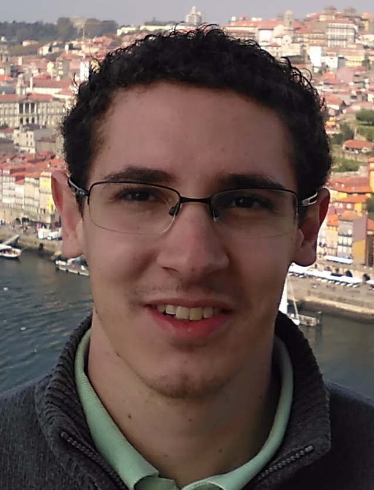

Doutor em Informática pela Pontifícia Universidade Católica do Rio de Janeiro (2019), Mestrado em
Ciência da Computação pela Universidade Federal de Juiz de Fora (2016), Bacharel em Sistemas de
Informação pelo Centro de Ensino Superior de Juiz de Fora (2013) e Técnico em Informática Industrial
pelo SENAI-JFN (2008). Atualmente é professor do Centro de Ensino Superior de Juiz de Fora, professor
visitante atuando como pesquisador no Laboratório de Engenharia de Software na PUC-Rio e Avaliador de
cursos superiores do INEP/MEC. Tem experiência na área de Computação com ênfase em Engenharia de
Software, Banco de Dados e Inteligência Artificial. Temas atuais de interesse de pesquisa são: Banco de
Dados NoSQL; Manutenção e Evolução de Software; Proveniência de Dados; Mineração de Dados, Métricas,
testes e qualidade de software; Sistemas Multiagentes; Engenharia de Software Experimental;